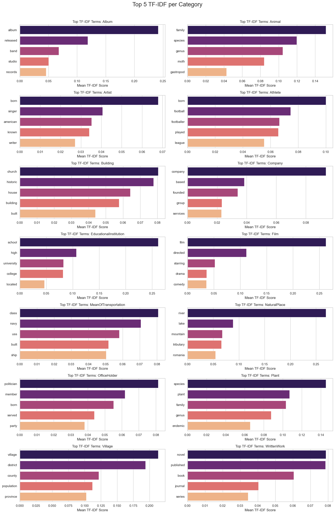

Text Classification
1. Dataset
- Dataset: DBpedia-14
- Src: https://huggingface.co/datasets/fancyzhx/dbpedia_14
- Total Training Samples: 560,000
- Total Testing Samples: 70,000
- Number of classes: 14
- Columns: label (0-13), title, content
2. Exploratory Data Analysis (EDA)
2.1. Dataset Overview & Label Distribution
The DBpedia-14 dataset is a large-scale text classification benchmark comprising 14 non-overlapping classes that cover a broad spectrum of Wikipedia entities. The dataset contains a total of 560,000 training samples and 70,000 testing samples.

As illustrated in the class distribution plot, the dataset is perfectly uniform, with every category containing exactly 40,000 training samples. This lack of class imbalance significantly simplifies the training process by removing the need for oversampling or weighted loss functions, establishing a highly stable baseline for comparing different neural network architectures.
2.2. Text Length & Sequence Complexity
To determine the optimal sequence length for our neural networks, we analyzed the word count distribution across the dataset.

The Word Count Distribution plot demonstrates that the vast majority of introductory Wikipedia paragraphs are concise, heavily concentrated between 10 and 80 words, and tapering off significantly after 90 words. This insight directly informs our tokenization strategy, allowing us to set an efficient max_length that captures complete semantic context without incurring unnecessary padding and computational overhead.
2.3. Lexical Analysis & Class Separability
To understand the linguistic features our models will learn, we conducted a lexical analysis of the dataset focusing on vocabulary diversity, distinctive terms, and meaningful phrase patterns across all 14 categories.

We first examined Vocabulary Richness to gauge the lexical diversity required to master each class. Categories covering broad areas of human activity like Artist, Company, and Film have the highest number of unique words. In contrast, tightly defined structural or geographic categories like MeanOfTransportation and Village utilize a much more constrained vocabulary.

Next, we analyzed the Top 5 Most Distinctive Terms (TF-IDF) to isolate the unique single-word identifiers per class. This visualization reveals highly separable features across the ontology. For instance, the EducationalInstitution category is heavily anchored by expected terms like "school", "university", and "college", while the Animal category relies strictly on taxonomic terms like "family", "species", and "genus". This indicates a strong baseline of class-specific vocabulary for the models to leverage.

Analyzing the Top 5 Bigrams (Two-Word Phrases) helped us understand how the models might differentiate classes based on structural context:
- Categories like Animal and Athlete possess highly explicit phrase patterns. The Animal class uses specific scientific pairings (like "marine gastropod"), and Athlete relies heavily on sports and biographical terms (such as "football player" or "summer olympics").
- The Company class exhibits bigrams dominated by structural and geographical identifiers (such as "united states", "company founded", or "record label").
- Potential Risk: We identified a notable structural issue within the Film category. The word "film" appears in almost every top phrase (e.g., "film directed", "drama film", "comedy film"). Because this explicit label identifier is heavily embedded within the text descriptions, a model might achieve a high accuracy score simply by hunting for the word "film" rather than actually learning the semantic context of a movie description.

Finally, to map the linguistic boundaries between classes, we generated a Category Similarity Matrix using the cosine similarity of each category's mean TF-IDF vector. The heatmap reveals that the most prominent linguistic overlaps occur within clearly related topical domains, most notably between biological categories (Animal and Plant at a highly correlated 0.65) and biographical/entertainment categories (e.g., Athlete and Artist at 0.41). Crucially for our error analysis, the matrix also exposes subtle but measurable lexical overlaps involving the Company category, which intersects with EducationalInstitution (0.11) and Building (0.06). While these scores are lower than the major thematic clusters, this shared structural vocabulary highlights potential boundary ambiguities among physical and organizational entities.
2.4. Dataset Samples
To provide qualitative context for the DBpedia-14 structure, the table below highlights two representative Wikipedia lead paragraphs for each of the 14 ontological classes.
| Category | Sample Extracts |
|---|---|
| Company |
|
| Educational Institution |
|
| Artist |
|
| Athlete |
|
| Office Holder |
|
| Mean Of Transportation |
|
| Building |
|
| Natural Place |
|
| Village |
|
| Animal |
|
| Plant |
|
| Album |
|
| Film |
|
| Written Work |
|
3. Dataset, DataLoader, and Augmentation Setup
3.1. Data Processing and Tokenization Strategy
With the insights from the EDA, specifically the word count distribution, we optimized our sequence lengths. For all models, text sequences were configured to pad or truncate to a strict maximum length of 100 tokens. This ensures we capture the necessary semantic context without incurring unnecessary computational overhead from excessive padding. The data pipelines were customized depending on the model architecture:
-
Transformer Pipeline: Tokenization was handled via
Hugging Face's
AutoTokenizer. - RNN Pipeline: A custom vocabulary was generated dynamically from the training data, allocating specific indices for padding and unknown tokens.
3.2 Embeddings & Augmentation
For the recurrent architectures, pre-trained GloVe embeddings (100-dimensional) were loaded into a continuous embedding matrix. The embedding layer was set to unfreezed. This allowed the pre-trained weights to be fine-tuned during the training process to better capture the specific semantic boundaries of the 14 DBpedia classes.
Pipeline Architecture Diagram
Below is the structural flow of the data from raw text to the final classification decision across both model methodologies.
4. Model Building, Training, Evaluation, and Comparison
4.1 Model Architectures
Two distinct categories of neural network architectures were implemented and evaluated to establish a comprehensive baseline:
-
Recurrent Neural Networks (RNNs):
- BiLSTM: A Bidirectional Long Short-Term Memory network utilizing a 100-dimensional embedding layer, followed by an LSTM layer. The final hidden states from both directions are concatenated before passing into the fully connected classification head.
- BiGRU: A Bidirectional Gated Recurrent Unit, utilizing the same dimensionality and concatenation strategy to evaluate whether the simplified gate structure provides efficiency gains over the LSTM.
- Transformers: Utilized via Hugging Face's API, relying on DistilBERT and RoBERTa backbones adapted for 14-class sequence classification.
4.2 Training Configuration
The optimizer used was AdamW, with learning rates explicitly tuned to
the architecture type: 1e-3 for the recurrent neural networks (BiLSTM
and BiGRU) and 2e-5 for the fine-tuning of the Transformer models
(DistilBERT and RoBERTa). The loss function was
CrossEntropyLoss.
5. Experimental Results Report: Tables, Figures, Analysis, and Discussion
Table 1 below displays the comprehensive performance and efficiency metrics for all evaluated backbones.
Table 1: Backbone Comparison Metrics
| Model | Accuracy | Macro F1 | Inference Time (s) | Inf. Memory (MB) | Learnable Params | Train Time (s) | Train Mem (MB) |
|---|---|---|---|---|---|---|---|
| DistilBERT | 98.71% | 0.9871 | 14.28 | 474.66 | 66,964,238 | 399.12 | 1808.61 |
| RoBERTa | 98.54% | 0.9854 | 13.81 | 533.50 | 82,129,166 | 459.11 | 1997.23 |
| BiLSTM | 97.04% | 0.9704 | 1.11 | 172.23 | 9,875,418 | 57.07 | 225.59 |
| BiGRU | 97.30% | 0.9729 | 0.99 | 189.97 | 9,816,538 | 47.25 | 293.74 |
Confusion Matrices


Analysis & Discussion
The experimental results showcase a classic trade-off between absolute predictive power and computational efficiency:
- Performance Peak: DistilBERT achieved the highest overall performance, yielding an accuracy of 98.71% and a macro F1 score of 0.9871. It slightly outperformed RoBERTa (98.54% accuracy) while requiring fewer learnable parameters (roughly 66.9 million compared to RoBERTa's 82.1 million) and less training memory (1808.61 MB vs 1997.23 MB).
- Efficiency Peak: The RNN models represent highly efficient baselines. The BiGRU achieved a highly respectable 97.30% accuracy while utilizing only 9.8 million parameters.
- Matrix Analysis: A review of the generated confusion matrices (Figures 1-4) indicates that while all models perform exceptionally well, the RNN models exhibit slightly more false positives between similar classes (e.g., Plant vs. Animal), likely due to the lack of deep contextual self-attention found in transformers.
6. Model Efficiency Analysis
The metrics collected reveal stark efficiency disparities that heavily influence deployment viability.
- Training Footprint: The BiGRU trained in just 47.25 seconds, utilizing only 293.74 MB of VRAM. The BiLSTM was similarly lightweight, using only 225.59 MB of training memory. Conversely, RoBERTa took nearly 10 times as long to train (459.11 seconds) and consumed almost 2 GB of VRAM.
- Inference Bottlenecks: For real-world applications, inference latency is critical. The BiGRU processed the evaluation batches in just 0.99 seconds, whereas DistilBERT took 14.28 seconds. For systems where a ~97% accuracy threshold is acceptable, deploying an RNN over a Transformer yields a >14x speedup in user-facing latency.
7. Error Analysis (Hard Examples)
An analysis of misclassified "hard examples" reveals distinct behavioral differences between how transformers and RNNs parse complex contextual text.
Example Case 1: Complex Entanglement
"Mamunur Rashid (Bengali: মামুনুর রশীদ; born 29 February 1948) is one of the pioneering theatre activists in Bangladesh. He is the chief secretary of leading theatre group Aranyak (theatre group) which plays crucial roles in creating common people aware about their rights through his plays. He was born on 29 February in 1948 in the village Paikora under Kalhati upazila in Tangail. One of the most popular production of his group is Rarang which deals with the life of Santal."
Actual Label: Artist
Model Predictions:
- DistilBERT: Artist (Correct)
- RoBERTa: Artist (Correct)
- BiLSTM: Athlete (Incorrect)
- BiGRU: OfficeHolder (Incorrect)
Discussion: The text contains overlapping contextual clues. Transformers correctly synthesized "theatre" and "plays" across the full sequence to deduce Artist. The RNNs frequently failed here, likely over-indexing on localized structural words that triggered Athlete or Office Holder associations in their embedding spaces.
Example Case 2: Historical Ambiguity
"Atâ-Malek Juvayni (1226-1283) (Persian: عطاملک جوینی) in full Ala al-Din Ata-ullah (Persian: علاءالدین عطاالله) was a Persian historian who wrote an account of the Mongol Empire entitled Tarīkh-i Jahān-gushā (History of the World Conqueror).He was born in Juvayn a city in Khorasan in northeastern Iran. Both his grandfather and his father Baha al-Din had held the post of sahib-divan or Minister of Finance for Muhammad Jalal al-Din and Ögedei Khan respectively."
Actual Label: Office Holder
Model Predictions:
- DistilBERT: OfficeHolder (Correct)
- RoBERTa: Artist (Incorrect)
- BiLSTM: Artist (Incorrect)
- BiGRU: Artist (Incorrect)
Discussion: This text heavily features words related to writing ("historian", "wrote an account"), leading baseline models to guess Artist. Only the attention mechanisms in DistilBERT were able to accurately weigh the concluding sentences regarding "Minister of Finance" and apply that classification to the subject, showcasing superior long-range dependency resolution compared to the RNNs and even its heavier counterpart, RoBERTa.